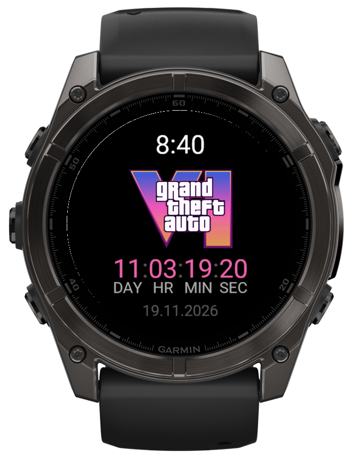
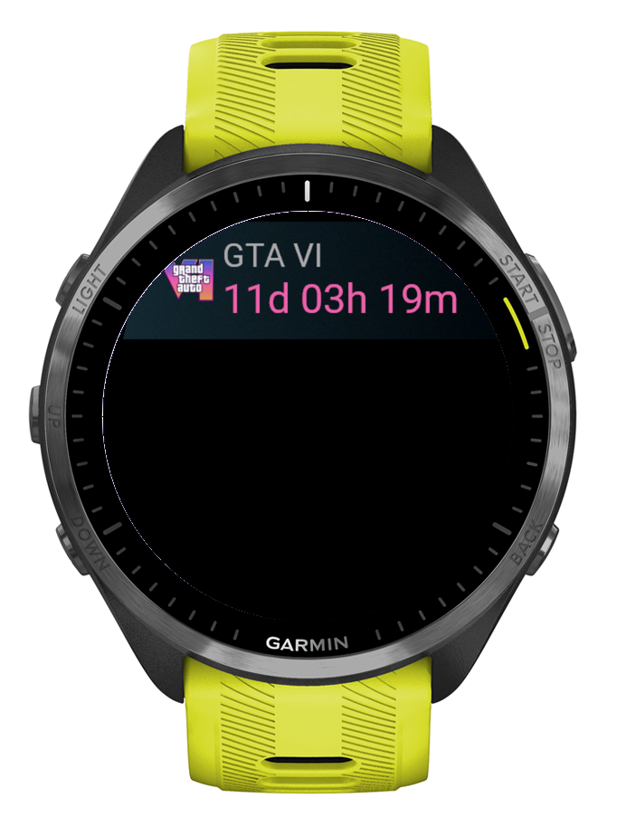
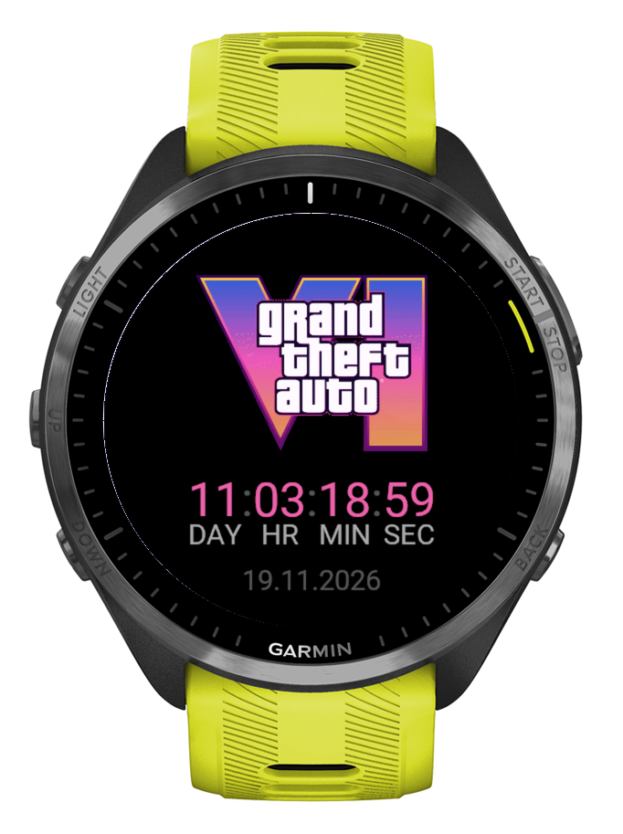

WATCH FACEAlways in sight
Time, the logo and the countdown. When you lower your wrist on an AMOLED watch, only the time and the countdown stay on, dimmed.

Connect IQ watch face + app · Forerunner · fēnix · Venu
Days, hours, minutes and seconds until 19 November 2026. A watch face, a glance and a full-screen app: use one or all three.
Free in the Connect IQ Store · Install over USB · Source on GitHub

Vice City, GTA VI launch trailer. © Rockstar Games / Take-Two Interactive
Install now
Free. On your phone, open a store page below and install it with the Connect IQ app. Store updates come to your watch by themselves.
Installed it over USB before? First delete the old .prg file from GARMIN/Apps, then install from the store. This way you do not get two copies.
No Connect IQ app on your phone? Use a computer: download the file below and copy it to your watch over USB. It takes about two minutes. A copy from USB does not update by itself: if the release date changes, download the new file from this page.
123 watches
Your watch: Forerunner 965
GTA6Countdown-fr965.prg · GTA6App-fr965.prg
Glance not supported on this watch: it needs Connect IQ 4. Open the app from the apps list instead.
Could not load the watch list. All files are on the release page below.
Pick your watch above and download the watch face, the app, or both.
Plug the watch into your computer with the USB cable.
Mac: open it in OpenMTP. Older watches also show up in Finder as a drive.
Windows: open it in File Explorer.
Copy the .prg file into the GARMIN/Apps folder.
Eject and unplug the watch. It installs the file in a few seconds.
Watch face: open the watch face settings (on most watches hold UP or MENU, then Watch Face) and pick GTA VI Countdown.
Glance: in the glance list choose Edit, then Add. Needs Connect IQ 4 or newer.
App: press START and pick GTA VI Countdown.
What you get

WATCH FACETime, the logo and the countdown. When you lower your wrist on an AMOLED watch, only the time and the countdown stay on, dimmed.

GLANCEPress UP or DOWN on any watch face and see GTA VI · 11d 04h 18m. Your favourite watch face stays.

APPOpen it from the glance or with START. A big logo and live seconds. BACK closes it.
Live · until 00:00 your time
19 November 2026 · PS5 · Xbox Series X|S
Setup
Get the watch face, the app, or both from the Connect IQ Store: open the links in Install now on your phone. No Connect IQ app? Copy the file over USB from a computer.
Watch face: hold UP, choose Watch Face, then GTA VI Countdown.
Glance: scroll the glance list to the end, choose Edit, then Add.
App: press START and pick GTA VI Countdown.
On 19 November at 00:00 the countdown turns into OUT NOW and starts counting days since launch.
How it works
The countdown is plain math on the watch. No permissions, no network, no phone nearby.
The watch face redraws once a minute and shows seconds only while your wrist is up. Always-on mode lights a few pixels and moves them every minute against burn-in.
From 19 November it shows OUT NOW and the day number since release. Day one is launch day.
Questions
No. It is an unofficial fan project. It is not affiliated with or endorsed by Rockstar Games or Take-Two Interactive.
123 Garmin models with Connect IQ 3.0 or newer and a color screen: Forerunner, fēnix, epix, Enduro, Venu, vívoactive, MARQ, Descent, D2, Approach and Instinct 3 AMOLED.
The glance needs Connect IQ 4.0 or newer, for example Forerunner 965, fēnix 7 or Venu 2. On older watches the app is in the apps list.
At 00:00 on 19 November by your watch clock, in your time zone. Store unlock times can differ by region.
The date gets updated in a new version. The Connect IQ Store version updates by itself. A copy from USB does not: download the new file from this page.
No more than a regular digital watch face. It draws text once a minute, and seconds only while your wrist is up.
Privacy policy · updated 8 November 2026
The watch apps collect nothing. The watch face and the app ask for no permissions, make no network requests and collect no data. Everything happens on the watch.
Who runs this site. Belidor, as a private, non-commercial fan project. Contact: belidor@icloud.com · GitHub issues
Google Analytics, only with your consent. If you click "Allow" in the banner, this site loads Google Analytics 4 to count visits, pages, downloads, outbound clicks and scrolling. Google then receives your IP address, browser and device data, and the pages you view. Ads features and Google signals are off. Legal basis: your consent (GDPR Art. 6(1)(a)). If you click "Decline" or do nothing, Google Analytics does not load.
Cookies and recipient. Google Analytics sets the cookies _ga and _ga_RV98YPRNH7 on gta6-garmin.belidor.cc for up to 13 months after your last visit. The recipient is Google (Google Ireland Ltd. and Google LLC, USA). The transfer to the USA uses the EU-US Data Privacy Framework. Your banner choice stays in the local storage of your browser (gta6-analytics). This site sets no other cookies.
Withdraw at any time. Click "Analytics settings" at the bottom of the page and choose "Decline". The site then stops Google Analytics and deletes its cookies. A withdrawal does not affect visits that were counted before it.
Buy Me a Coffee button. The coffee button at the bottom right comes from Buy Me a Coffee (Publisherr, Inc., USA). To show it, your browser loads a script and two small images from buymeacoffee.com, so Buy Me a Coffee receives your IP address, browser and device data, and the address of this site. The button itself sets no cookies. If you click it, the Buy Me a Coffee page opens in a panel on this site. That page sets its own cookies and loads other services, such as Stripe for payments, Google Tag Manager and the CookieYes cookie banner. The Buy Me a Coffee privacy policy applies to it. Buy Me a Coffee uses Standard Contractual Clauses for data from the EU. Legal basis: legitimate interest in accepting voluntary support for this free project (GDPR Art. 6(1)(f)).
Hosting, fonts and downloads. GitHub Pages (GitHub, Inc., USA) hosts this site. GitHub logs the IP addresses of visitors for security (legitimate interest, GDPR Art. 6(1)(f)). The fonts come from this site, not from Google. The .prg downloads come from GitHub Releases on github.com. See the GitHub privacy statement and the Google privacy policy.
Your rights. You can ask for access to your data, its correction, erasure or restriction, and a copy in a portable format, and you can object to its use. You can also complain to a data protection supervisory authority. Write to the contact address above.